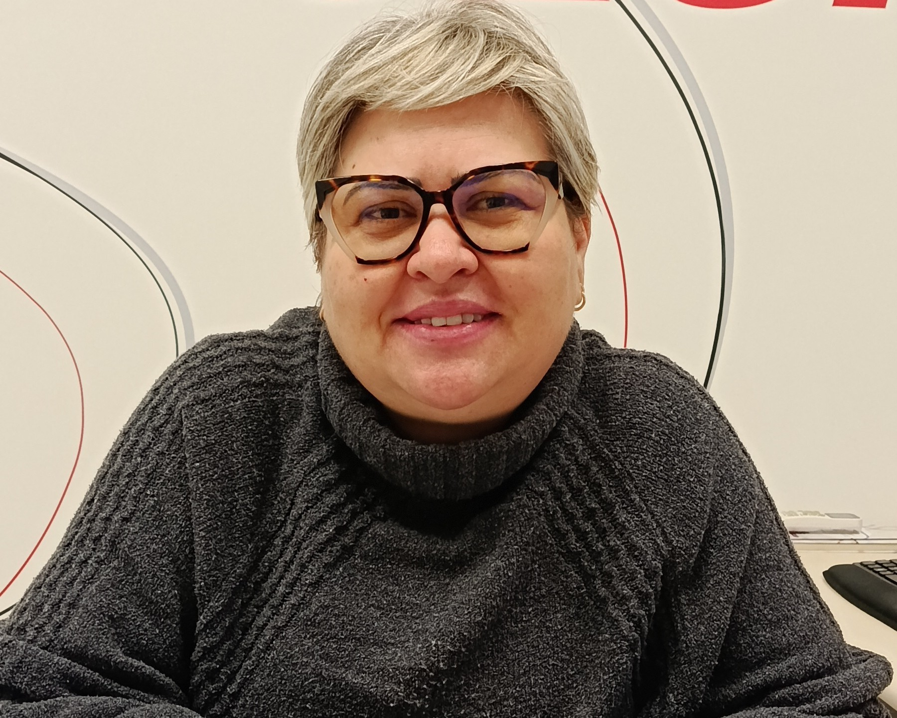
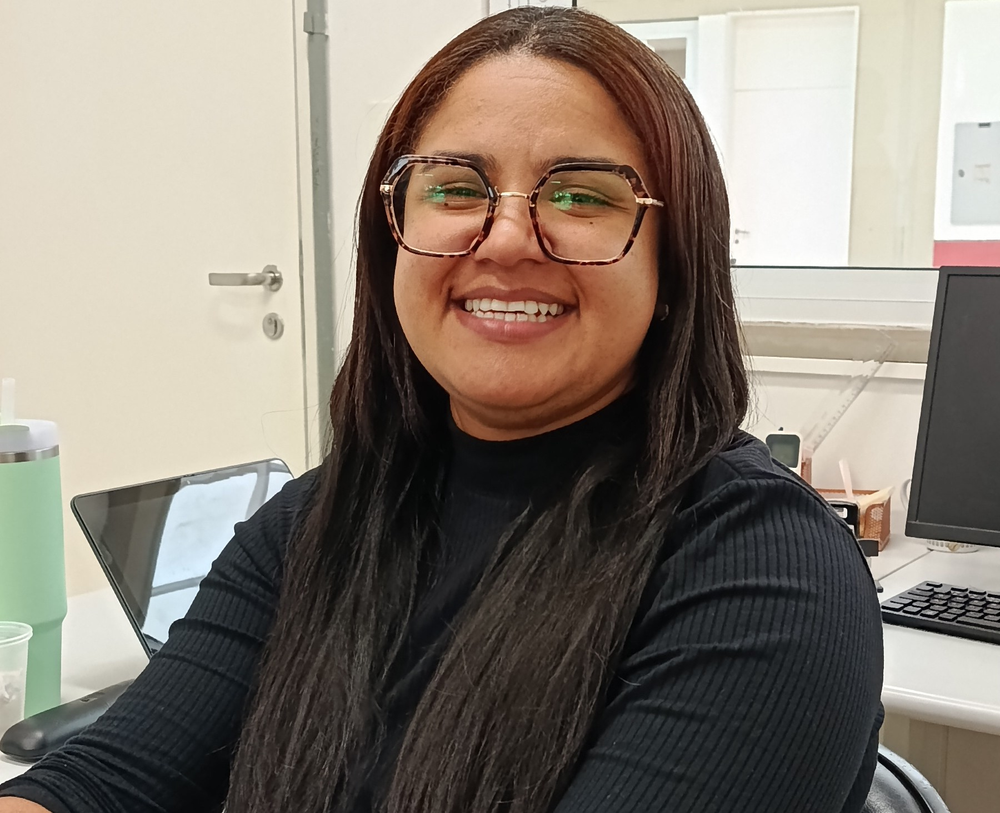

MULHERES —
Gestão
Valéria
Valéria atua há 23 anos na educação. Iniciou sua trajetória como professora e alfabetizadora, passando 19 anos em sala de aula, até assumir a coordenação em 2022 e, em 2025, tornar-se diretora. Inspirada pela mãe, que sempre a incentivou a conquistar seu espaço, encontra sua maior satisfação em cuidar das pessoas e contribuir para a comunidade escolar.

Desafio
Acompanhar as mudanças na educação ao longo de 19 anos.
Significado de trabalhar com a educação
Transformar o mundo por meio do conhecimento.
Importância da função
Garantir o funcionamento da escola por meio de uma gestão estratégica.
Conquistas
Se tornar diretora dentro da instituição SESI.
Liderar com o coração, transformar com a educação
Valéria se motiva a formar pessoas de caráter, valoriza a inclusão e destaca a importância de uma direção acolhedora e do reconhecimento das mulheres na educação, que merecem cada vez mais voz e espaço.
Mensagem aos alunos
“Nunca parem de buscar conhecimento.”Carla
Carla atua na coordenação pedagógica do SESI, é formada em Pedagogia e possui mestrado em Educação, com foco em Matemática. Criada em um bairro periférico, encontrou nos estudos e no incentivo de sua mãe a motivação para transformar sua realidade. Inspirada por professoras, construiu sua trajetória na educação, estágios e experiências em sala de aula. Com dedicação, especializou-se em Matemática e conquistou seu espaço no SESI, onde contribui para a formação de alunos e educadores.

Desafio
Superar as dificuldades da faculdade, o preconceito de famílias e a falta de confiança dos professores.
Significado de trabalhar com a educação
Transformar vidas por meio do conhecimento e da formação de pessoas.
Importância da função
Acompanhar a aprendizagem dos alunos e contribuir para a formação dos professores.
Conquistas
Ser convidada para produzir materiais didáticos e concluir o mestrado enquanto lecionava.
Liderar com o coração, transformar com a educação
Carla busca melhorar a educação por meio da formação de professores. Valoriza a constância, destaca os conhecimentos exigidos pela coordenação e os desafios das mulheres precisarem provar constantemente sua capacidade
Mensagem aos alunos
“Saiba escolher com quem vocês andam. Tenham um propósito, aproveitem o tempo, corram atrás. Tenham uma base. Valorizem onde vocês estão.”